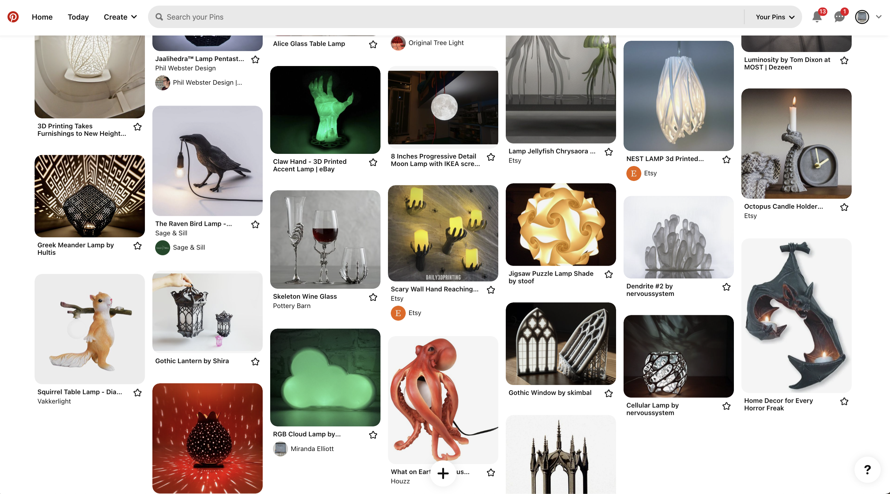
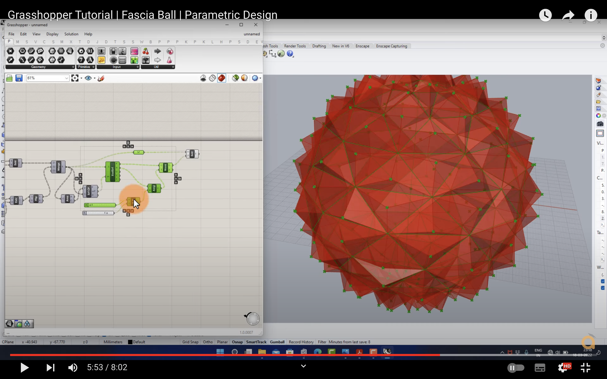
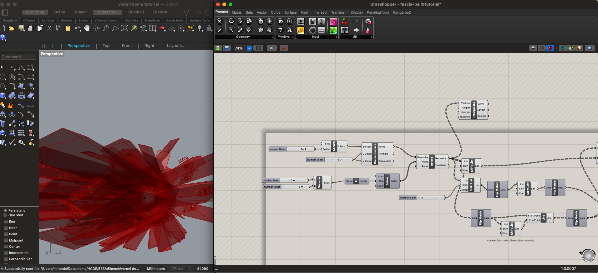
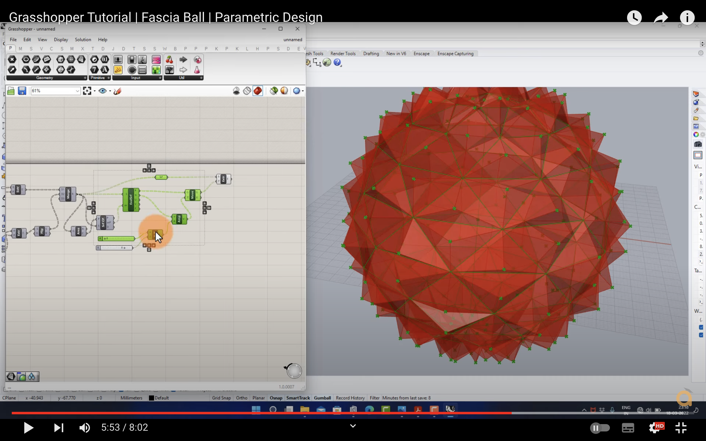
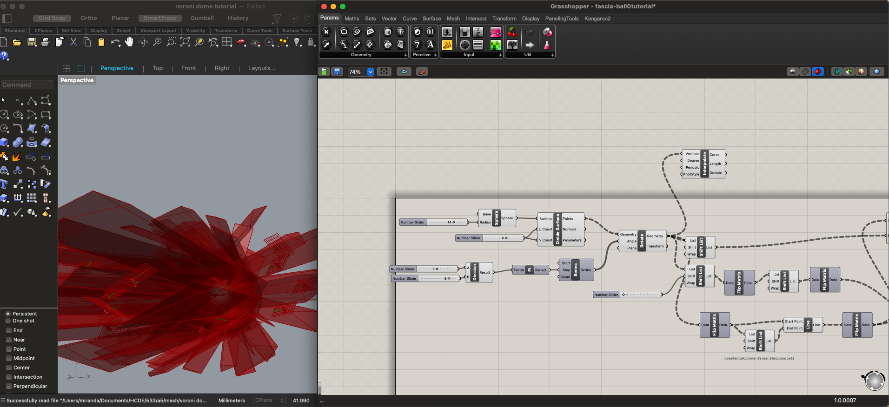
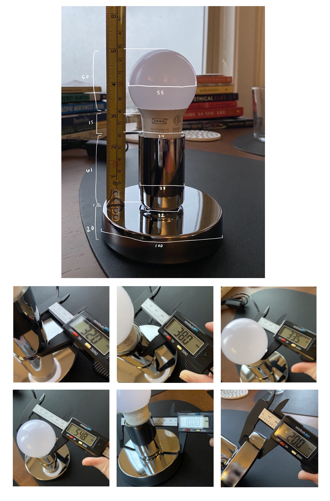

This week, we needed to *start* the acquiring, measuring, and modeling process. I, again, spent too much time conceptualizing my dream 3D printed lamp. I made a Pinterest board of ideas. It got out of hand.
I eventually landed on the realization that my teeny apartment is full of shit already, but I have been wanting to build out a funkier live performance setup for my music project, so I could focus on designing for that. The project is named after a mushroom - specifically, an Old Man of the Woods - so I wanted to create a lamp of that lil guy and base the model on an illustration from my merch. The cap is spiky and could lend itself to emitting some geometric light patterns, so I started researching YouTube tutorials on creating voronoi patterns in Grasshopper to construct it.

Sadly, my Grasshopper tutorials were fruitless and left me with only a lingering urge to kill. First, I followed along with the this tutorial about making a facet dome and ended up with an open polysurface that I couldn't figure out how to make into a mesh (the horror!). Other watchers had experienced the same issue, as seen in the comments...which I definitely should've read before watching. Next, I tried following this tutorial about constructing a fascia ball, and I ended up with an ice pick sculpture that looked veery different from their spiky ball output no matter what parameters I set.

 



Remembering how many meshes existed on Thingiverse already, I decided to use one from there as the cap to start, and chose this pinecone-esque dragon egg. I created a simple tube that matched the width of the lamp innard (29mm according to Amazon - I hadn't recieved it in the mail yet). I made that a mesh, imported and scaled the dragon ball STL until it made sense proportionally as a mushroom cap, and joined them into a single mesh. Before I put any more effort into the modeling phase, I wanted to see what this could look like printed with "spiralize outer contour", so I exported it as an STL, imported it into Cura, sliced it with those settings, and test printed it at 10% of its intended size to save time.

The resulting print was very useful as a first iteration for planning purposes. It was cute but verrry thin - removing the shroom from the raft made its cap and stem crack apart from each other. It offered important intel into the disco potential of the pinecone cap (big fan!). I took the following notes for future iterations to explore over the next week:
Finally, I got the lamp base in the mail, so I put a little IKEA lightbulb in there and measured it all together. The measurements are listed in mm in the image below, as recorded via a caliper and measuring tape. I divided it into segments with maximum widths that the lamp should fit around and recorded the height of each.
This is as far as I was able to get this week. Over the next week, I'll finalize the model based on these measurements, print the lamp parts full-sized, and actually assemble the lamp.
This week, we needed to *finish* making the lamp. I had already acquired and measured the lamp innards, and I had a general concept and had done some test printing at a small scale, but needed to land on a final model and actually do the damn thing.
As detailed above, my plan was to make a mushroom lamp. I, however, did not make a mushroom lamp (although it does still resemble one, in a more abstract sense). I got sick of messing around with Rhino, kept confusing myself with how I would connect the cap and the stem without adhesive, and decided I would rather play around in Grasshopper again. It's just so much more fun?? You get to build out a definition then move knobs and watch it grow and change before your eyes?? Real life magic?! So I found a rad Grasshopper tutorial that used the Weaverbird plugin to create a parametric hanging lamp and followed along with that. There are lots of comments in my Grasshopper file that I'll link below of what's going down, so if you're curious, get in there. I'm not going to explain it all here.
I knew that whatever I made needed to hug the bottom of the base then get wider to accommodate the bulb, and I had a vision of printing it with this sparkly red PLA I bought for Halloween and having it be this disco blood droplet spreading little streams of light around everywhere. Then I remembered that one has to screw in a bulb, so if I wanted to print it in one piece, it needed to have a big enough opening to screw the bulb in through. This was disappointing, but at this point I had also just tested positive for covid and was being faced with my limits and mortality at all angles, so I just needed to make Something. Adorable tears of disco blood be damned. I was having a hard time envisioning what shape would best fit the lamp's structure, so I modeled the two main sections of the lamp innards as cylinders in Grasshopper with heights and widths corresponding to the base and bulb, then experimented with how the lamp design's parameters could shape around those.

Finally, it was time to slice up this bad boy in Cura and print. I flipped it over so that the wider opening was at the bottom and decided to use a raft and forgo supports. I set a slightly higher printing temperature (205) for the new filament (per Amazon review recommendations), and decided to print with concentric infill in case that happened to be prettier for light shining through. After a beautiful 4h 27m 15s of whirring, she came into existence. My iPad died during the timelapse, but you can see the first 2/3 being constructed below. You can also see how the raft simply did not want to let go of her top layer, so she's got a lil shag going on, but we're not gonna let that get us down.

Ta daaa! It fit! Let there be light!